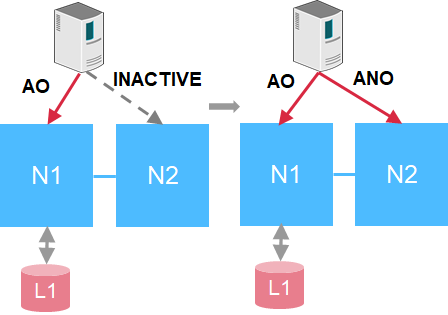

SAN enhancements
Contributors
 Download PDF of this page
Download PDF of this page
ONTAP 9.9.1 delivers some important SAN-related enhancements. This section covers those features and includes links to documentations that go over those in further detail.
All SAN Array enhancements
ONTAP 9.8 introduced the All SAN Array (ASA) to the NetApp product portfolio. In ONTAP 9.9.1, the ASA gets some highly coveted additions.
Scale-out from two nodes to 12 nodes
Prior to ONTAP 9.9.1, the ASA could only be a two-node cluster. However, SAN clusters in ONTAP can scale up to 12 nodes, which provides additional scale-out for performance and capacity in enterprise SAN environments. Now, the ASA can scale up to 12 nodes in a single cluster, provided all nodes in the cluster have the ASA personality. ASA models can be mixed in the same cluster (for instance, a two-node A400 HA pair with a two-node A800 HA pair).
NVMe/FC support
The ASA can now take advantage of ultra-low latency NVMe over Fibre Channel in ONTAP 9.9.1. All that is required is a license for NVMe/FC and 32Gb FC target adapters.
In-place conversion from AFF SAN to ASA
With the assistance of a script and NetApp TME or Professional Services resources, you can convert existing AFF SAN clusters to ASA personalities without needing to migrate data. The only prerequisite is that if the cluster is serving any NAS or S3 data, those protocols and datasets should be removed prior to conversion.
Single LUN performance
Both ASA platforms and AFF SAN clusters gain the benefits of changes in ONTAP 9.9.1 that greatly improve single-LUN performance at peak workloads by way of parallelization of the SCSI stack to the LUN.
In the following table, tests on an A800 platform and an A300 platform compare performance for a single LUN workload, with nearly 4x performance for reads and 75% better performance for writes on the AFF A800 in ONTAP 9.9.1 against the same workload in ONTAP 9.8.
| Platform | Random read peak IOPS | Random write peak IOPS |
|---|---|---|
A800 |
+393% |
+75% |
A300 |
+245% |
+3.5% |
| These improvements do not affect multi-LUN applications (such as Logical Volume Manager). |
NVMe over Fibre Channel enhancements
In ONTAP 9.9.1, NVMe over Fibre Channel namespaces can now failover by way of an inactive remote path, providing greater overall resiliency for NVMe/FC applications.

In addition, ONTAP 9.9.1 introduces support for NVMe/FC with VMware virtualization workloads by providing vVol support and provisioning of namespaces through vCenter.
 Edit on GitHub
Edit on GitHub